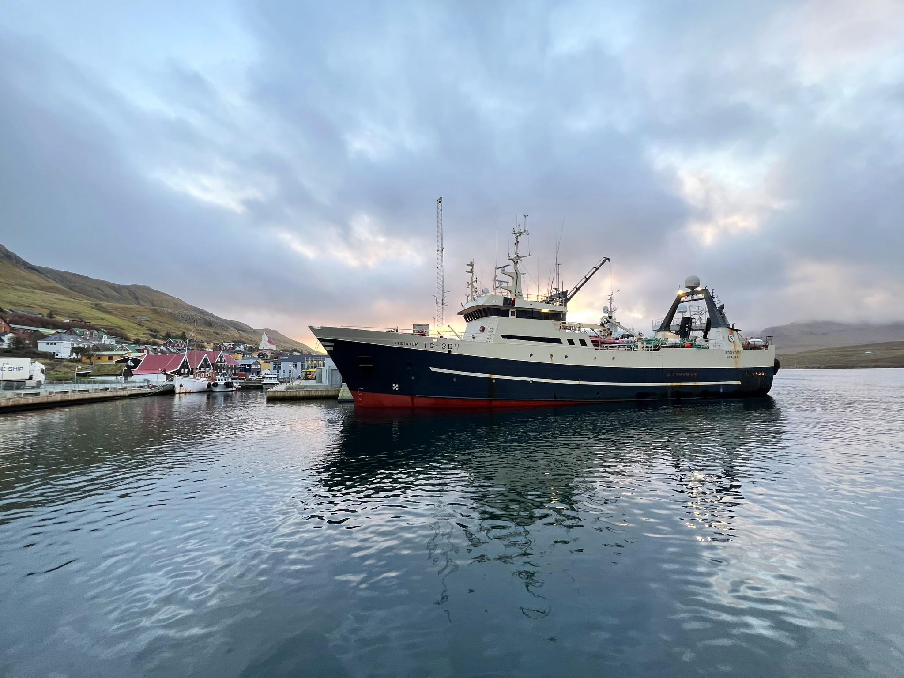

Delta Seafood operates modern landing, sorting, and packaging facilities in the Faroe Islands. Our sites are designed for efficient operations, high hygiene standards, and full export compliance.
Whether you need chilled or frozen handling, or quality control for international shipments, our facilities are equipped to support the full seafood supply chain.
At Delta Seafood, we provide reliable landing, sorting, and packaging services for a wide range of seafood products. Our facilities are designed to ensure efficient handling from vessel arrival to final shipment, while maintaining high standards of quality, hygiene, and traceability throughout the entire process.
Upon landing, all raw materials are carefully inspected and handled by experienced personnel to ensure freshness and product integrity. The seafood is then sorted according to species, size, and quality requirements, allowing us to meet the specific demands of customers and international markets.
Our packaging services are tailored to customer specifications and export standards. We offer flexible packaging solutions designed to preserve product quality during transportation and storage, ensuring that products arrive in optimal condition. With a strong focus on efficiency, food safety, and sustainable operations, Delta Seafood delivers dependable seafood processing services for partners worldwide.
